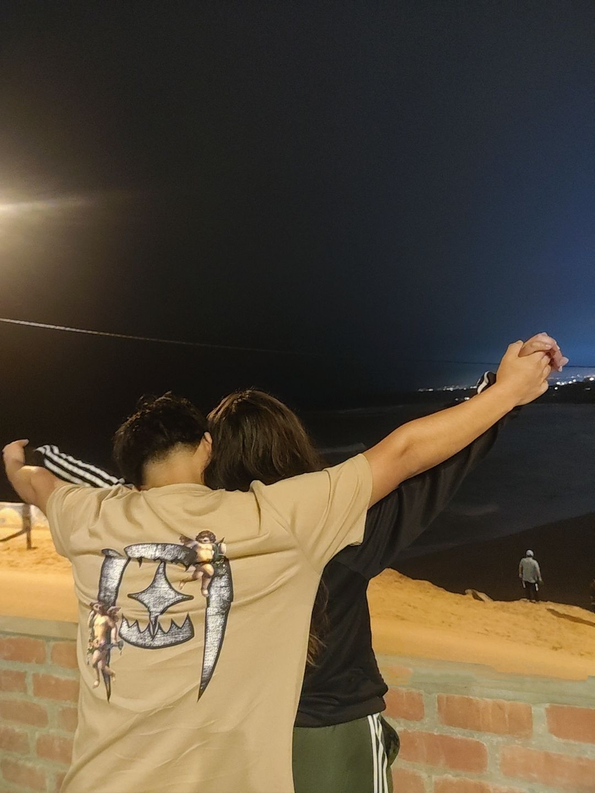

Para alguien especial
Para Maricielo,
No soy muy bueno con las palabras, pero hoy quiero escribirte algo
que nace desde lo más sincero de mí, porque desde que te conocí, algo
dentro de mí cambió. No sé si fue tu forma de sonreír, tu manera de
hablar o simplemente tu energía, pero los días contigo se sienten
distintos … mejores. Sé que apenas estamos comenzando a conocernos, y
quizás por eso me cuesta expresar todo lo que siento cuando estoy
contigo. Cada momento, cada risa, cada mirada todo contigo tiene algo
especial. El otro día, cuando me besaste, sentí algo muy real. Y
cuando las cosas se pusieron un poco más intensas, quise respetarte,
no por frenar lo que siento, sino porquen vales demasiado para mí como
para apresurar algo tan bonito. No quiero que pienses que soy como los
demás. No busco algo pasajero, busco algo que se construya con verdad,
respeto y cariño. Quiero seguir conociéndote, sin máscaras, sin prisa…
y si tú también lo sientes, entonces ojalá podamos seguir escribiendo
esta historia juntos. Gracias por aparecer en mi vida. No sé a dónde
nos llevará esto, pero por primera vez en mucho tiempo, quiero
descubrirlo. Con cariño, Esteban
💛🌼
